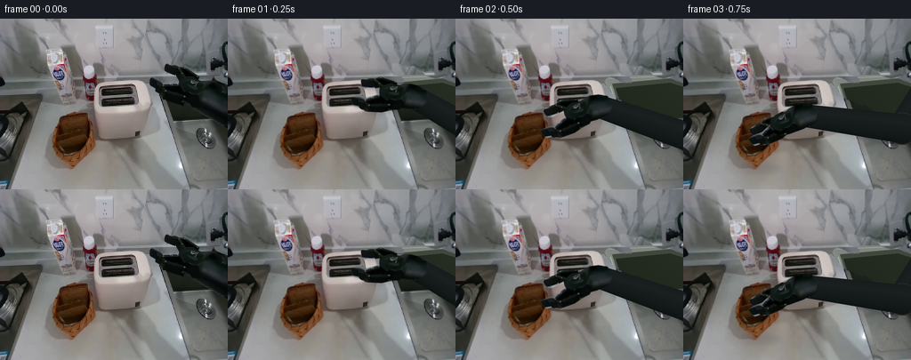
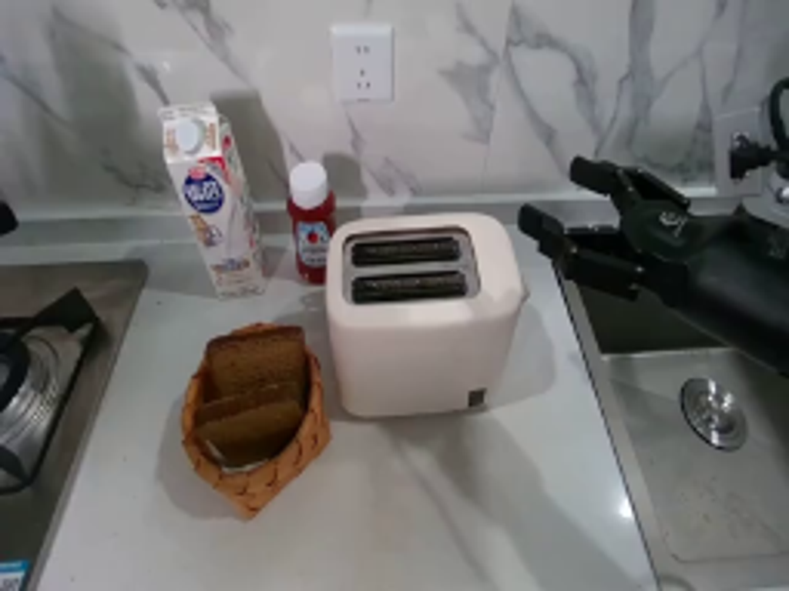
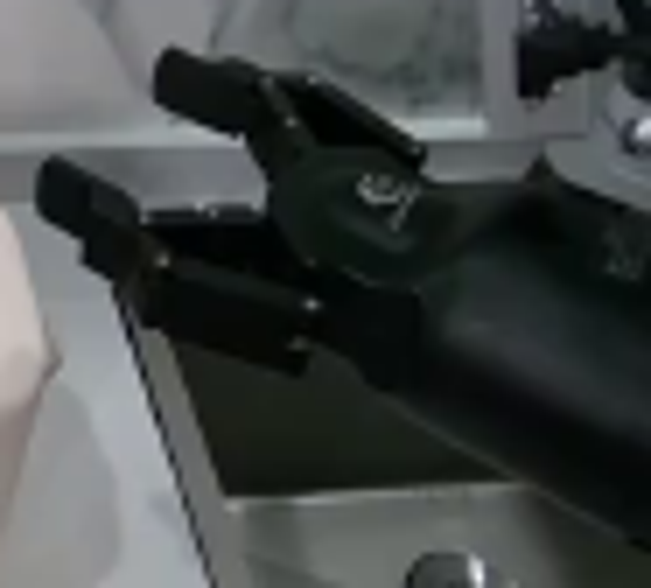
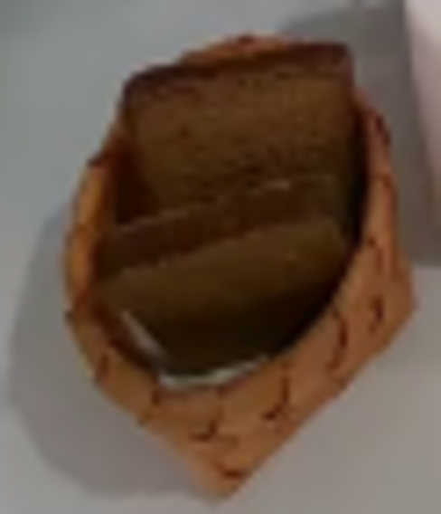
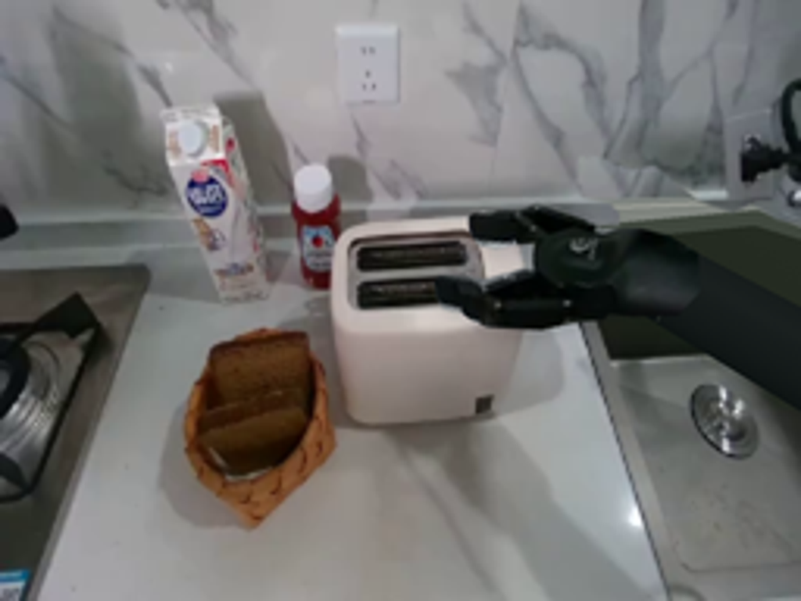

CODING AGENTS AS PIXEL WORLD MODELS
traex/GPT-6-Astra · common50_0002
点击播放 · 原生 RGB 像素
逐轮保存的候选
回放视频、检查图与代码变化。
每份候选均可单独播放。实际图片检查记录在下方工具轨迹中。
候选 01播放与检查图
点击播放 · 原生 RGB 像素


展开代码变化
--- 上一保存版本
+++ 本次保存版本
@@ -0,0 +1,310 @@
+"""Deterministic, image-based robotic bread-loading sequence.
+Uses only the supplied photograph and local mathematical image operations.
+"""
+from pathlib import Path
+import math
+import numpy as np
+from PIL import Image, ImageDraw, ImageFilter
+import artifact_io
+
+ROOT = Path(__file__).resolve().parent
+SRC = Image.open(ROOT / 'first_frame.png').convert('RGB')
+W,H=SRC.size
+S=4
+SZ=(W*S,H*S)
+ORIG=np.asarray(SRC).astype(float)
+BIC=Image.Resampling.BICUBIC
+LANC=Image.Resampling.LANCZOS
+rng=np.random.default_rng(41)
+
+def poly_mask(points, blur=0):
+ m=Image.new('L',SZ)
+ ImageDraw.Draw(m).polygon([(round(x*S),round(y*S)) for x,y in points],fill=255)
+ if blur: m=m.filter(ImageFilter.GaussianBlur(blur*S))
+ return m
+
+def line(im, points, color, width):
+ ImageDraw.Draw(im).line([(int(x*S),int(y*S)) for x,y in points],fill=color,width=max(1,int(width*S)),joint='curve')
+
+def ell(im, box, fill, outline=None, width=1):
+ ImageDraw.Draw(im).ellipse(tuple(int(a*S) for a in box),fill=fill,outline=outline,width=max(1,int(width*S)))
+
+def polygon(im, points, fill):
+ ImageDraw.Draw(im).polygon([(round(x*S),round(y*S)) for x,y in points],fill=fill)
+
+HI=SRC.resize(SZ,BIC)
+Y,X=np.mgrid[0:H*S,0:W*S].astype(float);X/=S;Y/=S
+NOISE=rng.normal(0,.85,(H*S,W*S))
+
+# Restore only the regions uncovered by the moving, original photographic hand.
+robot_outline=[(185,50),(191,50),(202,54),(209,53),(223,64),(234,68),
+ (240,65),(248,70),(256,72),(260,74),(262,127),(252,122),(235,115),
+ (215,105),(206,98),(199,97),(180,89),(176,84),(174,81),(169,79),
+ (167,74),(168,68),(172,65),(181,68),(187,72),(198,72),(198,68),
+ (195,65),(186,63),(184,58)]
+removal=poly_mask(robot_outline,.4)
+restored=HI.copy()
+# Upper wall is extended from the directly adjacent marble, preserving its texture.
+wall=np.asarray(HI).copy()
+for yy in range(46*S,72*S):
+ for xx in range(176*S,256*S):
+ sy=max(0, yy-17*S)
+ sx=max(0,xx-5*S)
+ wall[yy,xx]=np.asarray(HI)[sy,sx]
+restored=Image.fromarray(wall)
+# Stainless-steel rear ledge and the recessed sink under the forearm.
+metal=np.empty((H*S,W*S,3),np.uint8)
+for k,base in enumerate([133,139,135]):
+ metal[:,:,k]=np.clip(base+.18*(Y-100)-.08*(X-210)+NOISE,0,255)
+metal_img=Image.fromarray(metal)
+restored.paste(metal_img,(0,0),poly_mask([(165,64),(256,62),(260,144),(189,133)]))
+polygon(restored,[(170,66),(245,63),(261,69),(262,77),(176,78)],(128,133,127))
+line(restored,[(172,67),(244,64),(260,70)],(162,164,157),1.2)
+polygon(restored,[(176,73),(242,67),(262,75),(262,117),(190,119)],(64,72,62))
+# A softly shaded deep sink cavity, not a moving background patch.
+sink=np.zeros((H*S,W*S,3),np.uint8)
+for k,b in enumerate([34,41,31]):
+ sink[:,:,k]=np.clip(b+.05*(X-205)-.07*(Y-95)+NOISE*.55,0,255)
+restored.paste(Image.fromarray(sink),(0,0),poly_mask([(180,78),(241,72),(261,78),(262,111),(193,116)]))
+line(restored,[(178,77),(191,117),(256,112)],(81,89,79),1.2)
+line(restored,[(174,76),(187,119)],(163,168,157),1.5)
+line(restored,[(190,119),(256,114)],(157,164,153),1.4)
+CLEAN=Image.composite(restored,HI,removal)
+
+# Reconstruct the small occluded basket cavity, leaving the original outer wicker.
+empty=CLEAN.copy()
+rear_mask=poly_mask([(64.8,116),(66.5,110),(71,107.5),(84,105),
+ (98,105),(100.5,111),(102,124),(100,136),(92,145),(67,145),(63,131)],.35)
+patch=np.asarray(HI).copy()
+# Counter colors sampled from the unoccluded strip immediately left of the basket.
+for yy in range(103*S,146*S):
+ yc=yy/S
+ for xx in range(61*S,104*S):
+ xc=xx/S
+ donor=np.asarray(HI)[yy,int((51+(xc-63)*.07)*S)].astype(float)
+ donor += -max(0,xc-66)*.31
+ patch[yy,xx]=np.clip(donor,0,255)
+empty.paste(Image.fromarray(patch),(0,0),rear_mask)
+inner=[(65,126),(69,120),(76,116),(87,114.5),(96,117),(99,123),
+ (100,131),(97,140),(91,147),(83,153),(75,153),(67,147),(63,140),(62,132)]
+cavity=np.empty((H*S,W*S,3),np.uint8)
+weave=(np.sin(X*2.7+Y*.92)*2.6+np.cos(Y*2.1-X*.44)*2.0+NOISE*1.3)
+light=np.clip((Y-116)/37,0,1)
+for k,(lo,hi) in enumerate([(55,124),(32,81),(15,42)]):
+ cavity[:,:,k]=np.clip(lo+(hi-lo)*light+weave,0,255)
+empty.paste(Image.fromarray(cavity),(0,0),poly_mask(inner,.35))
+# Woven back rim, followed by shadowed fine basket strands.
+line(empty,[(64,129),(66,124),(70,119),(77,116),(87,115),(94,117),(98,121),(100,129)],(119,75,34),3)
+line(empty,[(65,129),(68,122),(75,118),(84,116.5),(93,119),(97,124)],(157,107,57),.85)
+for j in range(9):
+ xx=67+j*3.5
+ yy=117+.018*(xx-84)**2
+ line(empty,[(xx,yy-1),(xx+1.7,yy+2)],(77,46,23),.7)
+for j in range(6):
+ yy=132+j*3.1
+ line(empty,[(67,yy),(75,yy+3),(86,yy+3.7),(95,yy-1)],(142,93,43),.45)
+# Original front rim and paper liner remain above the cavity.
+front_rim=poly_mask([(61,140),(66,146),(74,151),(84,153),(93,148),(100,137),
+ (103,143),(96,156),(81,168),(63,155),(58,144)],.2)
+empty.paste(HI,(0,0),front_rim)
+
+# Full rear slice: visible crust/crumb is copied directly. The hidden lower face
+# is completed with another portion of the same crumb, in its own local frame.
+backpoly=[(66,115),(68,110.8),(72,109),(78,107.8),(91,106),(97,106.5),
+ (98.7,111),(99.6,124),(99,134),(96,141),(88,147),(76,148),
+ (69,144),(66,139),(65,128)]
+back=HI.convert('RGBA')
+back.putalpha(poly_mask(backpoly,.22))
+backarr=np.asarray(back).copy()
+src_hi=np.asarray(HI)
+for yy in range(132*S,149*S):
+ for xx in range(65*S,100*S):
+ if backarr[yy,xx,3]:
+ # Copy crumb from just above the occluding front slice.
+ sy=int((118+(yy/S-132)*.62)*S)
+ sx=int(min(97,max(68,xx/S))*S)
+ fade=1-.20*(yy/S-132)/17
+ col=src_hi[sy,sx].astype(float)*fade
+ # The edge retains its darker rounded crust.
+ d=min(xx/S-65,100-xx/S,149-yy/S)
+ if d<2: col*=.65+.16*max(0,d)
+ a=min(1,max(0,(yy/S-132)/2))
+ backarr[yy,xx,:3]=np.clip(src_hi[yy,xx]*(1-a)+col*a,0,255)
+back=Image.fromarray(backarr)
+frontpoly=[(64,135),(68,132.5),(78,131),(89,128.8),(96,128.5),
+ (98.5,132),(98,137),(94,144),(88,149),(83,151.5),(74,150),
+ (68,146),(64,141),(62.5,138)]
+front=HI.convert('RGBA');front.putalpha(poly_mask(frontpoly,.18))
+# Movable first slice uses the photographed front texture, with rigid projected
+# pitch changing during its lift from the angled basket into the vertical slot.
+
+# Photographic rigid hand parts; the two fingers translate at their joints.
+upperpoly=[(186,51),(191,51),(202,54.5),(208,54),(221,64),
+ (225,68),(222,73),(209,70),(204,66),(199,65),(191,64),(186,61),(184.8,56)]
+lowerpoly=[(171,66.3),(177,67.9),(185,72),(198,72.5),(210,77),
+ (221,85),(223,92),(217,96),(207,94),(197,93),(181,87),
+ (176.5,83),(174.5,80),(169,77),(168.2,72),(169,68)]
+palmpoly=[(204,65),(214,64.5),(227,68.7),(237,72),(245,77),
+ (252,85),(249,97),(240,102),(226,98),(211,91),(203,86),(199.5,78),(201,71)]
+
+def cut(poly):
+ im=HI.convert('RGBA');im.putalpha(poly_mask(poly,.28));return im
+UPPER=cut(upperpoly);LOWER=cut(lowerpoly);PALM=cut(palmpoly)
+ANCHOR=np.array([183.,65.])
+
+def rot(deg):
+ th=np.deg2rad(deg)
+ return np.array([[np.cos(th),-np.sin(th)],[np.sin(th),np.cos(th)]])
+
+def rigid(layer, anchor, target, deg=0, scale=(1,1)):
+ mat=rot(deg) @ np.diag(scale)
+ inv=np.linalg.inv(mat)
+ off=np.asarray(anchor)-inv@np.asarray(target)
+ coeff=(inv[0,0],inv[0,1],off[0]*S,inv[1,0],inv[1,1],off[1]*S)
+ return layer.transform(SZ,Image.Transform.AFFINE,coeff,BIC)
+
+# Rigid articulated forearm. Two constant-length links solve planar IK;
+# projected cylinders, collars, and the real photographic palm share a wrist.
+def inverse_kinematics(wrist):
+ shoulder=np.array([310.,28.]);L1=110.;L2=115.
+ delta=shoulder-wrist;d=np.linalg.norm(delta);u=delta/d
+ a=(L1*L1-L2*L2+d*d)/(2*d)
+ hh=np.sqrt(max(0,L1*L1-a*a))
+ return wrist+a*u+hh*np.array([-u[1],u[0]]),shoulder
+
+
+def cylinder(a,b,r0,r1):
+ v=b-a;length=np.linalg.norm(v);u=v/length;n=np.array([-u[1],u[0]])
+ dx=X-a[0];dy=Y-a[1]
+ t=(dx*u[0]+dy*u[1])/length
+ tc=np.clip(t,0,1);rad=r0+(r1-r0)*tc
+ q=(dx*n[0]+dy*n[1])/rad
+ # Rounded cylindrical ends in the 2-D projection.
+ end=np.maximum(-t*length,(t-1)*length)
+ dist=np.sqrt(np.maximum(end,0)**2+(q*rad)**2)
+ coverage=np.clip((rad-dist)*S+.5,0,1)
+ # Directional soft highlight reflected from the kitchen, no plastic sheen.
+ shade=7*np.sqrt(np.clip(1-q*q,0,1))-5*q+2*np.exp(-((q+.42)/.2)**2)
+ fine=.38*np.sin(X*4.0+Y*.7)+NOISE*.45
+ arr=np.zeros((H*S,W*S,4),np.uint8)
+ for k,c in enumerate([16,22,22]):
+ arr[:,:,k]=np.clip(c+shade+fine+(k==2)*-.6,0,255)
+ arr[:,:,3]=(coverage*255).astype(np.uint8)
+ return Image.fromarray(arr)
+
+def arm_layers(target,theta,closure):
+ R=rot(theta);p=np.asarray(target)
+ wrist=p+R@(np.array([238.,89.])-ANCHOR)
+ elbow,shoulder=inverse_kinematics(wrist)
+ arm=Image.new('RGBA',SZ)
+ arm.alpha_composite(cylinder(elbow,shoulder,17,19))
+ # Rounded hard elbow housing.
+ ell(arm,(elbow[0]-18,elbow[1]-18,elbow[0]+18,elbow[1]+18),(25,31,30,255),(46,51,47,255),.7)
+ arm.alpha_composite(cylinder(wrist,elbow,12.8,16.4))
+ u=(elbow-wrist)/110;n=np.array([-u[1],u[0]])
+ # Rigid wrist collar and a restrained machined highlight.
+ for offset,color,width in [(4,(8,14,15,255),2.4),(6,(48,54,50,255),.65)]:
+ c=wrist+u*offset
+ line(arm,[c-n*12.4,c+n*12.4],color,width)
+ # Separate rigid fingers on a mechanical closing stroke.
+ du=np.array([-4.5,4.5])*closure
+ dl=-du
+ arm.alpha_composite(rigid(UPPER,ANCHOR-du,target,theta))
+ arm.alpha_composite(rigid(LOWER,ANCHOR-dl,target,theta))
+ arm.alpha_composite(rigid(PALM,ANCHOR,target,theta))
+ return arm
+
+# One slice in each of the two distinct slots. Only the portion above the
+# corresponding slot lip is visible; no toaster geometry changes.
+def bread_layer(which,pos,pitch=1.0,angle=0,slot=None):
+ if which==0:
+ # The original front slice is tilted in the basket (22 px projected
+ # height); rotate it upright on lift (37 px projected height).
+ layer=rigid(front,(81.5,131),pos,angle,(1,pitch))
+ else:
+ layer=rigid(back,(82.5,109),pos,angle)
+ if slot is not None:
+ rgba=np.asarray(layer).copy()
+ lip=(95.8 if slot==0 else 85.1)-.035*(X-(115 if slot==0 else 114))
+ alpha=np.clip((lip-Y)*S+.5,0,1)
+ rgba[:,:,3]=(rgba[:,:,3].astype(float)*alpha).astype(np.uint8)
+ layer=Image.fromarray(rgba)
+ return layer
+
+# Trajectory keyframes, at the requested real playback rate.
+# pose = fingertip midpoint, wrist angle, jaw closure
+poses=[
+ ((183,65),0,0),
+ ((151,83),-18,0),
+ ((105,116),-40,0),
+ ((81.5,131),-45,1),
+ ((85,94),-45,1),
+ ((111,57),-45,1),
+ ((133,57),-45,1),
+ ((133,84),-45,1),
+ ((133,84),-45,0),
+ ((109,72),-45,0),
+ ((85,101),-45,0),
+ ((82.5,109),-45,1),
+ ((89,72),-45,1),
+ ((116,45),-45,1),
+ ((131,47),-45,1),
+ ((131,74),-45,1),
+ ((131,74),-45,0),
+ ((165,55),-28,0),
+ ((173,108),-25,.6),
+ ((190,65),0,0),
+]
+
+frames=[]
+for i,(target,theta,closure) in enumerate(poses):
+ if i==0:
+ frames.append(np.array(SRC));continue
+ # Each removal is permanent; initially the basket is kept pixel exact.
+ if i<=3:
+ scene=CLEAN.copy().convert('RGBA')
+ elif i<=11:
+ scene=empty.copy().convert('RGBA')
+ scene.alpha_composite(back)
+ else:
+ scene=empty.copy().convert('RGBA')
+ # Soft shadows are localized under the currently moving hand and slice.
+ shadow=Image.new('RGBA',SZ)
+ x,y=target
+ height=max(0,105-y)
+ if 55<x<174:
+ alpha=int(max(7,24-height*.15))
+ ell(shadow,(x-19,y+32+height*.24,x+28,y+43+height*.24),(13,17,13,alpha))
+ shadow=shadow.filter(ImageFilter.GaussianBlur(3.0*S))
+ scene.alpha_composite(shadow)
+
+ if i>=7:
+ # Stable first slice while the second is retrieved.
+ lowered=6 if i>=18 else 0
+ scene.alpha_composite(bread_layer(0,(133,84+lowered),1.58,slot=0))
+ if i>=15:
+ lowered=6 if i>=18 else 0
+ scene.alpha_composite(bread_layer(1,(131,74+lowered),slot=1))
+ # Front slot is nearer the camera; preserve its correct occlusion.
+ scene.alpha_composite(bread_layer(0,(133,84+lowered),1.58,slot=0))
+ if 4<=i<=6:
+ pitch=1.42 if i==4 else 1.58
+ scene.alpha_composite(bread_layer(0,target,pitch,slot=0 if i==6 else None))
+ if 12<=i<=14:
+ scene.alpha_composite(bread_layer(1,target,slot=1 if i==14 else None))
+ scene.alpha_composite(bread_layer(0,(133,84),1.58,slot=0))
+
+ arm=arm_layers(target,theta,closure)
+ # Contact shadows immediately under the real rigid gripper.
+ sha=arm.getchannel('A').filter(ImageFilter.GaussianBlur(2.0*S))
+ sha=np.asarray(sha).astype(float)*.095
+ contact=Image.new('RGBA',SZ,(6,11,8,0));contact.putalpha(Image.fromarray(sha.astype(np.uint8)))
+ contact=contact.transform(SZ,Image.Transform.AFFINE,(1,0,-1.7*S,0,1,-3*S),BIC)
+ scene.alpha_composite(contact)
+ scene.alpha_composite(arm)
+ frames.append(np.asarray(scene.convert('RGB').resize((W,H),LANC),dtype=np.uint8))
+
+frames=np.stack(frames)
+assert np.array_equal(frames[0],np.asarray(SRC))
+artifact_io.save(frames,ROOT)
+print('Saved',frames.shape,frames.dtype,'to',ROOT)
候选 02播放与检查图
点击播放 · 原生 RGB 像素

展开代码变化
--- 上一保存版本
+++ 本次保存版本
@@ -44,14 +44,23 @@
(195,65),(186,63),(184,58)]
removal=poly_mask(robot_outline,.4)
restored=HI.copy()
-# Upper wall is extended from the directly adjacent marble, preserving its texture.
-wall=np.asarray(HI).copy()
-for yy in range(46*S,72*S):
- for xx in range(176*S,256*S):
- sy=max(0, yy-17*S)
- sx=max(0,xx-5*S)
- wall[yy,xx]=np.asarray(HI)[sy,sx]
-restored=Image.fromarray(wall)
+# Harmonic continuation of the exposed marble gives a seamless boundary instead
+# of moving any of the visible wall veins with the hand.
+unknown=np.asarray(removal.resize((W,H),LANC))>3
+yy,xx=np.mgrid[:H,:W]
+unknown &= yy<65
+wall=ORIG.copy()
+for row in range(46,65):
+ ids=np.flatnonzero(unknown[row])
+ if len(ids):
+ l,r=ids[0],ids[-1]
+ for col in ids:
+ t=(col-l+1)/(r-l+2)
+ wall[row,col]=ORIG[row,max(0,l-1)]*(1-t)+ORIG[row,min(W-1,r+1)]*t
+for _ in range(350):
+ mean=(np.roll(wall,1,0)+np.roll(wall,-1,0)+np.roll(wall,1,1)+np.roll(wall,-1,1))*.25
+ wall[unknown]=mean[unknown]
+restored=Image.fromarray(np.clip(wall,0,255).astype(np.uint8)).resize(SZ,BIC)
# Stainless-steel rear ledge and the recessed sink under the forearm.
metal=np.empty((H*S,W*S,3),np.uint8)
for k,base in enumerate([133,139,135]):
@@ -88,7 +97,8 @@
inner=[(65,126),(69,120),(76,116),(87,114.5),(96,117),(99,123),
(100,131),(97,140),(91,147),(83,153),(75,153),(67,147),(63,140),(62,132)]
cavity=np.empty((H*S,W*S,3),np.uint8)
-weave=(np.sin(X*2.7+Y*.92)*2.6+np.cos(Y*2.1-X*.44)*2.0+NOISE*1.3)
+weave=(np.sin(X*2.7+Y*.92+.6*np.sin(Y*.23))*1.8+
+ np.cos(Y*2.1-X*.44+.4*np.sin(X*.47))*1.7+NOISE*1.4)
light=np.clip((Y-116)/37,0,1)
for k,(lo,hi) in enumerate([(55,124),(32,81),(15,42)]):
cavity[:,:,k]=np.clip(lo+(hi-lo)*light+weave,0,255)
@@ -184,8 +194,9 @@
dist=np.sqrt(np.maximum(end,0)**2+(q*rad)**2)
coverage=np.clip((rad-dist)*S+.5,0,1)
# Directional soft highlight reflected from the kitchen, no plastic sheen.
- shade=7*np.sqrt(np.clip(1-q*q,0,1))-5*q+2*np.exp(-((q+.42)/.2)**2)
- fine=.38*np.sin(X*4.0+Y*.7)+NOISE*.45
+ shade=8*np.sqrt(np.clip(1-q*q,0,1))-5*q+3*np.exp(-((q+.42)/.2)**2)
+ fine=(.38*np.sin(X*4.0+Y*.7)+NOISE*.65+
+ 1.2*np.sin(tc*8.7+q*4.1)+.6*np.cos(tc*19-q*1.9))
arr=np.zeros((H*S,W*S,4),np.uint8)
for k,c in enumerate([16,22,22]):
arr[:,:,k]=np.clip(c+shade+fine+(k==2)*-.6,0,255)
候选 03播放与检查图
可观测工具轨迹
实际执行的命令与返回图片。
命令 1exit 0
/bin/bash -lc "ls -la && cat prompt.txt && printf '\\n---RULES---\\n' && cat GENERATION_RULES.md"
命令 2exit 0
/bin/bash -lc "cat task_spec.json && cat artifact_io.py && python - <<'PY'
from PIL import Image
im=Image.open('first_frame.png');print(im.size)
im.resize((1024,768)).save('.tmp/first_large.png')
PY"命令 3exit 0
/bin/bash -lc "python - <<'PY'
from PIL import Image
im=Image.open('first_frame.png')
im.crop((50,100,111,171)).resize((488,568)).save('.tmp/basket.png')
im.crop((163,44,256,128)).resize((651,588)).save('.tmp/robot.png')
im.crop((105,68,172,136)).resize((469,476)).save('.tmp/toaster.png')
PY"命令 4exit 0
/bin/bash -lc "cat > generate.py <<'PY'
\"\"\"Deterministic, image-based robotic bread-loading sequence.
Uses only the supplied photograph and local mathematical image operations.
\"\"\"
from pathlib import Path
import math
import numpy as np
from PIL import Image, ImageDraw, ImageFilter
import artifact_io
ROOT = Path(__file__).resolve().parent
SRC = Image.open(ROOT / 'first_frame.png').convert('RGB')
W,H=SRC.size
S=4
SZ=(W*S,H*S)
ORIG=np.asarray(SRC).astype(float)
BIC=Image.Resampling.BICUBIC
LANC=Image.Resampling.LANCZOS
rng=np.random.default_rng(41)
def poly_mask(points, blur=0):
m=Image.new('L',SZ)
ImageDraw.Draw(m).polygon([(round(x*S),round(y*S)) for x,y in points],fill=255)
if blur: m=m.filter(ImageFilter.GaussianBlur(blur*S))
return m
def line(im, points, color, width):
ImageDraw.Draw(im).line([(int(x*S),int(y*S)) for x,y in points],fill=color,width=max(1,int(width*S)),joint='curve')
def ell(im, box, fill, outline=None, width=1):
ImageDraw.Draw(im).ellipse(tuple(int(a*S) for a in box),fill=fill,outline=outline,width=max(1,int(width*S)))
def polygon(im, points, fill):
ImageDraw.Draw(im).polygon([(round(x*S),round(y*S)) for x,y in points],fill=fill)
HI=SRC.resize(SZ,BIC)
Y,X=np.mgrid[0:H*S,0:W*S].astype(float);X/=S;Y/=S
NOISE=rng.normal(0,.85,(H*S,W*S))
# Restore only the regions uncovered by the moving, original photographic hand.
robot_outline=[(185,50),(191,50),(202,54),(209,53),(223,64),(234,68),
(240,65),(248,70),(256,72),(260,74),(262,127),(252,122),(235,115),
(215,105),(206,98),(199,97),(180,89),(176,84),(174,81),(169,79),
(167,74),(168,68),(172,65),(181,68),(187,72),(198,72),(198,68),
(195,65),(186,63),(184,58)]
removal=poly_mask(robot_outline,.4)
restored=HI.copy()
# Upper wall is extended from the directly adjacent marble, preserving its texture.
wall=np.asarray(HI).copy()
for yy in range(46*S,72*S):
for xx in range(176*S,256*S):
sy=max(0, yy-17*S)
sx=max(0,xx-5*S)
wall[yy,xx]=np.asarray(HI)[sy,sx]
restored=Image.fromarray(wall)
# Stainless-steel rear ledge and the recessed sink under the forearm.
metal=np.empty((H*S,W*S,3),np.uint8)
for k,base in enumerate([133,139,135]):
metal[:,:,k]=np.clip(base+.18*(Y-100)-.08*(X-210)+NOISE,0,255)
metal_img=Image.fromarray(metal)
restored.paste(metal_img,(0,0),poly_mask([(165,64),(256,62),(260,144),(189,133)]))
polygon(restored,[(170,66),(245,63),(261,69),(262,77),(176,78)],(128,133,127))
line(restored,[(172,67),(244,64),(260,70)],(162,164,157),1.2)
polygon(restored,[(176,73),(242,67),(262,75),(262,117),(190,119)],(64,72,62))
# A softly shaded deep sink cavity, not a moving background patch.
sink=np.zeros((H*S,W*S,3),np.uint8)
for k,b in enumerate([34,41,31]):
sink[:,:,k]=np.clip(b+.05*(X-205)-.07*(Y-95)+NOISE*.55,0,255)
restored.paste(Image.fromarray(sink),(0,0),poly_mask([(180,78),(241,72),(261,78),(262,111),(193,116)]))
line(restored,[(178,77),(191,117),(256,112)],(81,89,79),1.2)
line(restored,[(174,76),(187,119)],(163,168,157),1.5)
line(restored,[(190,119),(256,114)],(157,164,153),1.4)
CLEAN=Image.composite(restored,HI,removal)
# Reconstruct the small occluded basket cavity, leaving the original outer wicker.
empty=CLEAN.copy()
rear_mask=poly_mask([(64.8,116),(66.5,110),(71,107.5),(84,105),
(98,105),(100.5,111),(102,124),(100,136),(92,145),(67,145),(63,131)],.35)
patch=np.asarray(HI).copy()
# Counter colors sampled from the unoccluded strip immediately left of the basket.
for yy in range(103*S,146*S):
yc=yy/S
for xx in range(61*S,104*S):
xc=xx/S
donor=np.asarray(HI)[yy,int((51+(xc-63)*.07)*S)].astype(float)
donor += -max(0,xc-66)*.31
patch[yy,xx]=np.clip(donor,0,255)
empty.paste(Image.fromarray(patch),(0,0),rear_mask)
inner=[(65,126),(69,120),(76,116),(87,114.5),(96,117),(99,123),
(100,131),(97,140),(91,147),(83,153),(75,153),(67,147),(63,140),(62,132)]
cavity=np.empty((H*S,W*S,3),np.uint8)
weave=(np.sin(X*2.7+Y*.92)*2.6+np.cos(Y*2.1-X*.44)*2.0+NOISE*1.3)
light=np.clip((Y-116)/37,0,1)
for k,(lo,hi) in enumerate([(55,124),(32,81),(15,42)]):
cavity[:,:,k]=np.clip(lo+(hi-lo)*light+weave,0,255)
empty.paste(Image.fromarray(cavity),(0,0),poly_mask(inner,.35))
# Woven back rim, followed by shadowed fine basket strands.
line(empty,[(64,129),(66,124),(70,119),(77,116),(87,115),(94,117),(98,121),(100,129)],(119,75,34),3)
line(empty,[(65,129),(68,122),(75,118),(84,116.5),(93,119),(97,124)],(157,107,57),.85)
for j in range(9):
xx=67+j*3.5
yy=117+.018*(xx-84)**2
line(empty,[(xx,yy-1),(xx+1.7,yy+2)],(77,46,23),.7)
for j in range(6):
yy=132+j*3.1
line(empty,[(67,yy),(75,yy+3),(86,yy+3.7),(95,yy-1)],(142,93,43),.45)
# Original front rim and paper liner remain above the cavity.
front_rim=poly_mask([(61,140),(66,146),(74,151),(84,153),(93,148),(100,137),
(103,143),(96,156),(81,168),(63,155),(58,144)],.2)
empty.paste(HI,(0,0),front_rim)
# Full rear slice: visible crust/crumb is copied directly. The hidden lower face
# is completed with another portion of the same crumb, in its own local frame.
backpoly=[(66,115),(68,110.8),(72,109),(78,107.8),(91,106),(97,106.5),
(98.7,111),(99.6,124),(99,134),(96,141),(88,147),(76,148),
(69,144),(66,139),(65,128)]
back=HI.convert('RGBA')
back.putalpha(poly_mask(backpoly,.22))
backarr=np.asarray(back).copy()
src_hi=np.asarray(HI)
for yy in range(132*S,149*S):
for xx in range(65*S,100*S):
if backarr[yy,xx,3]:
# Copy crumb from just above the occluding front slice.
sy=int((118+(yy/S-132)*.62)*S)
sx=int(min(97,max(68,xx/S))*S)
fade=1-.20*(yy/S-132)/17
col=src_hi[sy,sx].astype(float)*fade
# The edge retains its darker rounded crust.
d=min(xx/S-65,100-xx/S,149-yy/S)
if d<2: col*=.65+.16*max(0,d)
a=min(1,max(0,(yy/S-132)/2))
backarr[yy,xx,:3]=np.clip(src_hi[yy,xx]*(1-a)+col*a,0,255)
back=Image.fromarray(backarr)
frontpoly=[(64,135),(68,132.5),(78,131),(89,128.8),(96,128.5),
(98.5,132),(98,137),(94,144),(88,149),(83,151.5),(74,150),
(68,146),(64,141),(62.5,138)]
front=HI.convert('RGBA');front.putalpha(poly_mask(frontpoly,.18))
# Movable first slice uses the photographed front texture, with rigid projected
# pitch changing during its lift from the angled basket into the vertical slot.
# Photographic rigid hand parts; the two fingers translate at their joints.
upperpoly=[(186,51),(191,51),(202,54.5),(208,54),(221,64),
(225,68),(222,73),(209,70),(204,66),(199,65),(191,64),(186,61),(184.8,56)]
lowerpoly=[(171,66.3),(177,67.9),(185,72),(198,72.5),(210,77),
(221,85),(223,92),(217,96),(207,94),(197,93),(181,87),
(176.5,83),(174.5,80),(169,77),(168.2,72),(169,68)]
palmpoly=[(204,65),(214,64.5),(227,68.7),(237,72),(245,77),
(252,85),(249,97),(240,102),(226,98),(211,91),(203,86),(199.5,78),(201,71)]
def cut(poly):
im=HI.convert('RGBA');im.putalpha(poly_mask(poly,.28));return im
UPPER=cut(upperpoly);LOWER=cut(lowerpoly);PALM=cut(palmpoly)
ANCHOR=np.array([183.,65.])
def rot(deg):
th=np.deg2rad(deg)
return np.array([[np.cos(th),-np.sin(th)],[np.sin(th),np.cos(th)]])
def rigid(layer, anchor, target, deg=0, scale=(1,1)):
mat=rot(deg) @ np.diag(scale)
inv=np.linalg.inv(mat)
off=np.asarray(anchor)-inv@np.asarray(target)
coeff=(inv[0,0],inv[0,1],off[0]*S,inv[1,0],inv[1,1],off[1]*S)
return layer.transform(SZ,Image.Transform.AFFINE,coeff,BIC)
# Rigid articulated forearm. Two constant-length links solve planar IK;
# projected cylinders, collars, and the real photographic palm share a wrist.
def inverse_kinematics(wrist):
shoulder=np.array([310.,28.]);L1=110.;L2=115.
delta=shoulder-wrist;d=np.linalg.norm(delta);u=delta/d
a=(L1*L1-L2*L2+d*d)/(2*d)
hh=np.sqrt(max(0,L1*L1-a*a))
return wrist+a*u+hh*np.array([-u[1],u[0]]),shoulder
def cylinder(a,b,r0,r1):
v=b-a;length=np.linalg.norm(v);u=v/length;n=np.array([-u[1],u[0]])
dx=X-a[0];dy=Y-a[1]
t=(dx*u[0]+dy*u[1])/length
tc=np.clip(t,0,1);rad=r0+(r1-r0)*tc
q=(dx*n[0]+dy*n[1])/rad
# Rounded cylindrical ends in the 2-D projection.
end=np.maximum(-t*length,(t-1)*length)
dist=np.sqrt(np.maximum(end,0)**2+(q*rad)**2)
coverage=np.clip((rad-dist)*S+.5,0,1)
# Directional soft highlight reflected from the kitchen, no plastic sheen.
shade=7*np.sqrt(np.clip(1-q*q,0,1))-5*q+2*np.exp(-((q+.42)/.2)**2)
fine=.38*np.sin(X*4.0+Y*.7)+NOISE*.45
arr=np.zeros((H*S,W*S,4),np.uint8)
for k,c in enumerate([16,22,22]):
arr[:,:,k]=np.clip(c+shade+fine+(k==2)*-.6,0,255)
arr[:,:,3]=(coverage*255).astype(np.uint8)
return Image.fromarray(arr)
def arm_layers(target,theta,closure):
R=rot(theta);p=np.asarray(target)
wrist=p+R@(np.array([238.,89.])-ANCHOR)
elbow,shoulder=inverse_kinematics(wrist)
arm=Image.new('RGBA',SZ)
arm.alpha_composite(cylinder(elbow,shoulder,17,19))
# Rounded hard elbow housing.
ell(arm,(elbow[0]-18,elbow[1]-18,elbow[0]+18,elbow[1]+18),(25,31,30,255),(46,51,47,255),.7)
arm.alpha_composite(cylinder(wrist,elbow,12.8,16.4))
u=(elbow-wrist)/110;n=np.array([-u[1],u[0]])
# Rigid wrist collar and a restrained machined highlight.
for offset,color,width in [(4,(8,14,15,255),2.4),(6,(48,54,50,255),.65)]:
c=wrist+u*offset
line(arm,[c-n*12.4,c+n*12.4],color,width)
# Separate rigid fingers on a mechanical closing stroke.
du=np.array([-4.5,4.5])*closure
dl=-du
arm.alpha_composite(rigid(UPPER,ANCHOR-du,target,theta))
arm.alpha_composite(rigid(LOWER,ANCHOR-dl,target,theta))
arm.alpha_composite(rigid(PALM,ANCHOR,target,theta))
return arm
# One slice in each of the two distinct slots. Only the portion above the
# corresponding slot lip is visible; no toaster geometry changes.
def bread_layer(which,pos,pitch=1.0,angle=0,slot=None):
if which==0:
# The original front slice is tilted in the basket (22 px projected
# height); rotate it upright on lift (37 px projected height).
layer=rigid(front,(81.5,131),pos,angle,(1,pitch))
else:
layer=rigid(back,(82.5,109),pos,angle)
if slot is not None:
rgba=np.asarray(layer).copy()
lip=(95.8 if slot==0 else 85.1)-.035*(X-(115 if slot==0 else 114))
alpha=np.clip((lip-Y)*S+.5,0,1)
rgba[:,:,3]=(rgba[:,:,3].astype(float)*alpha).astype(np.uint8)
layer=Image.fromarray(rgba)
return layer
# Trajectory keyframes, at the requested real playback rate.
# pose = fingertip midpoint, wrist angle, jaw closure
poses=[
((183,65),0,0),
((151,83),-18,0),
((105,116),-40,0),
((81.5,131),-45,1),
((85,94),-45,1),
((111,57),-45,1),
((133,57),-45,1),
((133,84),-45,1),
((133,84),-45,0),
((109,72),-45,0),
((85,101),-45,0),
((82.5,109),-45,1),
((89,72),-45,1),
((116,45),-45,1),
((131,47),-45,1),
((131,74),-45,1),
((131,74),-45,0),
((165,55),-28,0),
((173,108),-25,.6),
((190,65),0,0),
]
frames=[]
for i,(target,theta,closure) in enumerate(poses):
if i==0:
frames.append(np.array(SRC));continue
# Each removal is permanent; initially the basket is kept pixel exact.
if i<=3:
scene=CLEAN.copy().convert('RGBA')
elif i<=11:
scene=empty.copy().convert('RGBA')
scene.alpha_composite(back)
else:
scene=empty.copy().convert('RGBA')
# Soft shadows are localized under the currently moving hand and slice.
shadow=Image.new('RGBA',SZ)
x,y=target
height=max(0,105-y)
if 55<x<174:
alpha=int(max(7,24-height*.15))
ell(shadow,(x-19,y+32+height*.24,x+28,y+43+height*.24),(13,17,13,alpha))
shadow=shadow.filter(ImageFilter.GaussianBlur(3.0*S))
scene.alpha_composite(shadow)
if i>=7:
# Stable first slice while the second is retrieved.
lowered=6 if i>=18 else 0
scene.alpha_composite(bread_layer(0,(133,84+lowered),1.58,slot=0))
if i>=15:
lowered=6 if i>=18 else 0
scene.alpha_composite(bread_layer(1,(131,74+lowered),slot=1))
# Front slot is nearer the camera; preserve its correct occlusion.
scene.alpha_composite(bread_layer(0,(133,84+lowered),1.58,slot=0))
if 4<=i<=6:
pitch=1.42 if i==4 else 1.58
scene.alpha_composite(bread_layer(0,target,pitch,slot=0 if i==6 else None))
if 12<=i<=14:
scene.alpha_composite(bread_layer(1,target,slot=1 if i==14 else None))
scene.alpha_composite(bread_layer(0,(133,84),1.58,slot=0))
arm=arm_layers(target,theta,closure)
# Contact shadows immediately under the real rigid gripper.
sha=arm.getchannel('A').filter(ImageFilter.GaussianBlur(2.0*S))
sha=np.asarray(sha).astype(float)*.095
contact=Image.new('RGBA',SZ,(6,11,8,0));contact.putalpha(Image.fromarray(sha.astype(np.uint8)))
contact=contact.transform(SZ,Image.Transform.AFFINE,(1,0,-1.7*S,0,1,-3*S),BIC)
scene.alpha_composite(contact)
scene.alpha_composite(arm)
frames.append(np.asarray(scene.convert('RGB').resize((W,H),LANC),dtype=np.uint8))
frames=np.stack(frames)
assert np.array_equal(frames[0],np.asarray(SRC))
artifact_io.save(frames,ROOT)
print('Saved',frames.shape,frames.dtype,'to',ROOT)
PY
python generate.py"命令 5exit 0
/bin/bash -lc "python - <<'PY'
from PIL import Image
im=Image.open('frames/01.png');im.resize((1024,768)).save('.tmp/check.png')
PY"命令 6exit 0
/bin/bash -lc "python generate.py && python - <<'PY'
from pathlib import Path
import numpy as np
from PIL import Image
p=Path('.')
a=np.load('pixels.npz')['pixels']
assert a.shape==(192,256,20)
assert np.array_equal(np.asarray(Image.open('frames/00.png')),np.asarray(Image.open('first_frame.png')))
assert len(list(p.glob('frames/[0-9][0-9].png')))==20
for f in ['generate.py','pixels.npz','index.html','inspection.png','transition_check.png']:
print(f, (p/f).stat().st_size)
print('Verified 20 RGB frames, 256x192; first frame is pixel-identical.')
PY"视觉工具实际返回图片 1

视觉工具实际返回图片 2

视觉工具实际返回图片 3

视觉工具实际返回图片 4
视觉工具实际返回图片 5

保存候选 3 份；完成命令 6 次；可验证图片返回 5 张。原始 API 响应与完整日志保留在本地。